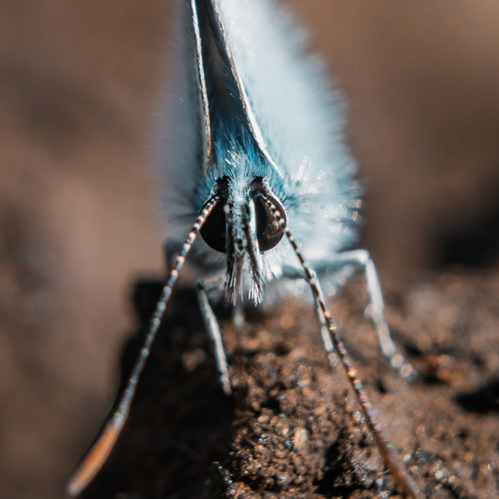
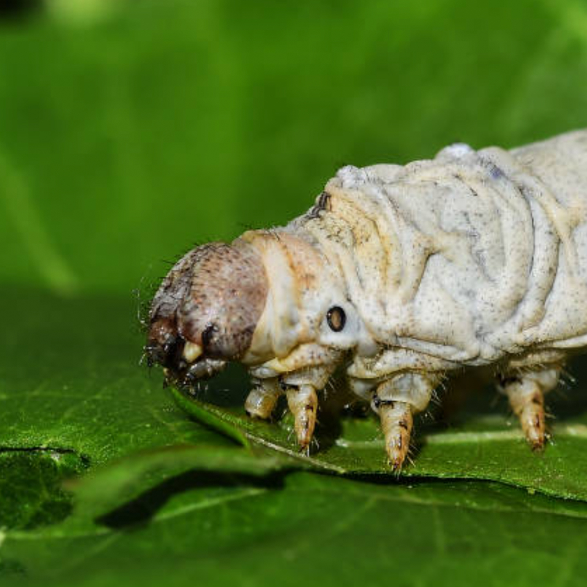

Error 404
Lo sentimos, no hemos podido encontrar la página que buscas.
Si sembrás contactarnos, tendras buena cosecha


Lo sentimos, no hemos podido encontrar la página que buscas.
Si sembrás contactarnos, tendras buena cosecha